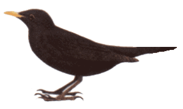

Le merle
Le merle noir appartient à la famille des grives, le mâle est entièrement noir, à l'exception de son bec jaune prononcé et un cercle orbital jaune-orange vif. On rencontre parfois des mâles partiellement blanc dans leur plumage, car
cette espèce a une forte tendance à l'albinisme.
Les femelles sont brun foncé avec des nuances plus claires sur la gorge et la poitrine et elles n'ont pas de bec et de cercle orbital jaune. Le plumage du jeune mâle est terne (ailes brunâtres). Jusqu'à son premier hiver, il a le bec
brun-noir et n'a pas encore l'anneau orbital jaune-orangé de l'adulte.
Comportement
À l'origine le merle noir vivait dans les bois et les forêts, mais de nos jours, il a fait aussi des jardins son domaine parce que son régime alimentaire n'est pas spécialisé.
Le merle noir est l'un des premiers chanteurs du petit matin et son chant est le plus familier de nos jardins. Il défend son territoire très tôt dans l'année et commence parfois à construire son nid quand la neige recouvre encore le sol, dès février.
La formation des couples commence parfois à l'automne ; elle s'accompagne de disputes relatives au territoire au desquelles les oiseaux se poursuivent, essayant de voler l'un au-dessus de l'autre. Le merle, véritable champion de la
reproduction, peut élever jusqu'à 5 couvées en une seule saison, mais la première est souvent détruite, parce qu'elle n'est pas suffisamment dissimulée par des feuilles. La femelle peut commencer une nouvelle couvée alors que le mâle
est encore en train de nourrir la précédente. Les jeunes des merles, commencent à voleter après huit jours à peine.
Comme tous les turdidés, les merles recherchent leur nourriture au sol de préférence. Lors des hivers cléments, ils trouvent sous les arbres et les buissons des escargots, des vers, des scarabées et des larves d'insecte. Ils tournent souvent la tête pour
localiser les vers. Il est important dès lors de laisser à leur intention des feuilles mortes dans nos jardins. À la mangeoire, les merles sont souvent querelleurs et chassent leurs congénères, mais aussi les autres oiseaux, Ces querelles
sont moins fréquentes lorsqu'ils trouvent au sol plusieurs portions de nourriture dispersées; de cette manière, les jeunes mâles et les femelles prélèvent plus aisément leur part; en outre, cela permet aux espèces plus petites d'accéder
à la mangeoire.
Le merle se nourrit dans les espaces ouverts et les sous-bois, mais toujours à proximité du couvert végétal. Il est particulièrement bruyant lorsqu'il fouille les feuilles mortes à la recherche d'insectes, de vers (qu'il dérobe souvent aux grives musiciennes).
Le merle noir visite volontiers les pelouses et les mangeoires.
Habitat
Le merle est très largement répandu dans les dans les bois, les bocages, les jardins et les bosquets des zones tant rurales que suburbaines ou même urbaines au cœur des espaces verts de nos villes.